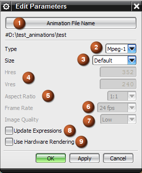

选项 |
描述 |
|||
|---|---|---|---|---|
|
1 |
动画文件名 |
打开输出文件名对话框可命名您的文件并在所需的位置存储。 |
||
|
2 |
类型 |
供您指定动画的文件类型，共三种类型可用：GIF89a、MPEG-2以及 MPEG-1。 |
||
|
3 |
大小 |
定义输出动画文件的分辨率 有以下几种选项：默认、CCIR 601/2、NTSC、PAL 以及用户定义。 |
||
|
4 |
水平分辨率/竖直分辨率 |
在大小设为用户定义时可用。
|
||
|
5 |
宽高比 |
在类型设为 Mpeg-2 时可用。 供您将水平分辨率和竖直分辨率之间的比例指定为所列值之一：1x1、4:3、16:9、2.21:1。 |
||
|
6 |
帧速率 |
在类型设为 Mpeg-2 或 GIF89a 时可用。 供您以帧每秒 (fps) 为单位指定回放速率。 |
||
|
7 |
图像质量 |
在类型设为 Mpeg-2，并且大小设置为用户定义时可用。 供您更改动画质量。 |
||
|
8 |
更新表达式 |
提供部件中对象或组件的参数化动画。此特征将高质量图像动画与表达式子系统集成在一起，并且允许在动画中创建简单移动。 该选项将其他级别的真实性添加到动画。
|
||
|
9 |
用硬件渲染 |
选中这个复选框时，将通过您的计算机来计算渲染，而不是通过 NX。 在捕捉艺术外观图像对话框中的当前视图尺寸值小于编辑参数对话框中的水平分辨率和竖直分辨率的值时可用。要打开捕捉艺术外观图像对话框，则将渲染样式设置为艺术外观，然后选择视图→可视化→捕捉艺术外观图像。 通过从图形窗口中直接捕捉显示内容，以启用的实时硬件渲染样式，例如着色或艺术外观，来为动画的每一帧创建图像。 在要快速创建动画，而不需要具备与使用照片般逼真的高质量着色图像所创建的动画相同的质量时，可使用该选项。
|